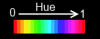
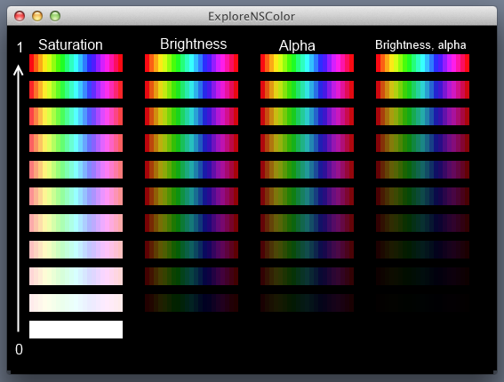
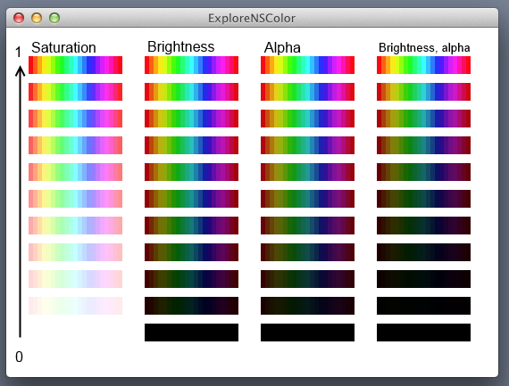
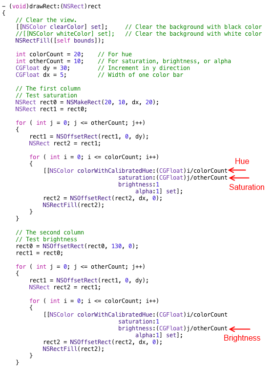
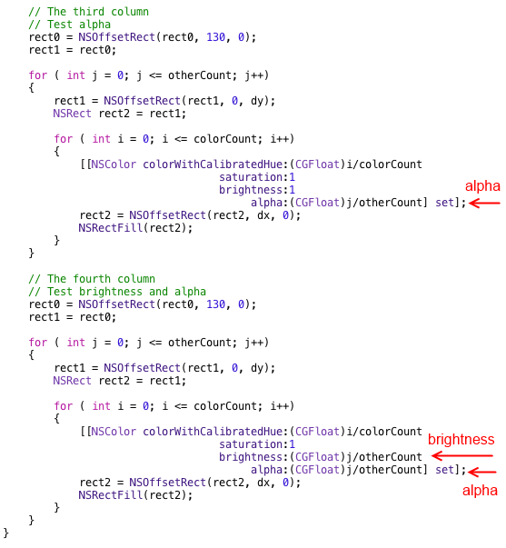
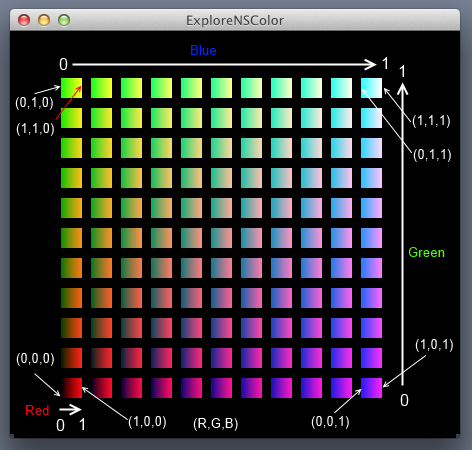
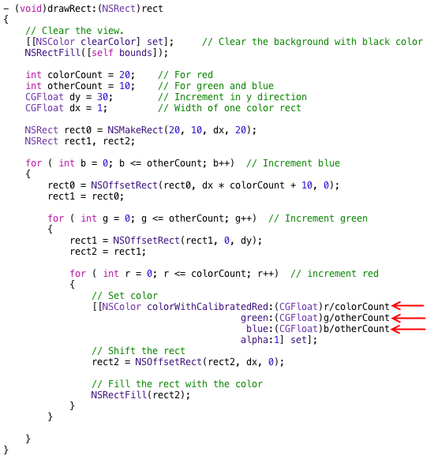

Back to Cocoa Graphics table of contents
Official link - NSColor Class Reference - Apple Developer
Setting color is one of the basic steps of drawing. In this tutorial, I am going to show you two ways to create colors. The first is to use (Hue, Saturation, Brightness) values and the second is using (Red, Green, Blue) values. After creating the color, we use -(void)set function to set the color for drawing rectangles.
The following is the prototypes of these functions.
In the color space of (H, S, B), the hue (H) determins the color. For example, 0 corresponds to red and 0.65 corresponds to blue. In the following figure, the spectrum is created by setting S (saturation), B (brightness), and alpha to one and changing H from 0 (left) to 1 (right).

The saturation (S) determines how strong the color is. Taking the red color for example, 1 corresponds to pure red while 0.5 corresponds to light red. The brightness (B) is, as the name indicated, the brightness of the color. In addition to H, S, and B, alpha (A) determines the transparency. A = 1 suggests opaque, while A = 1 suggests transparent. The following two figures are colors corresponding to differennt (H, S, B, A) values with black or white background.


The following is the code to generate the figure.


Here is the zipped project - ExploreNSColor.zip
In this example, I used red, green, and blue values (from 0 to 1) to generate colors and create a pattern in the following figure to show you how these values affect the color.

The following is the revised drawRect function.

The zipped project file is here - ExploreNSColorRGB.zip